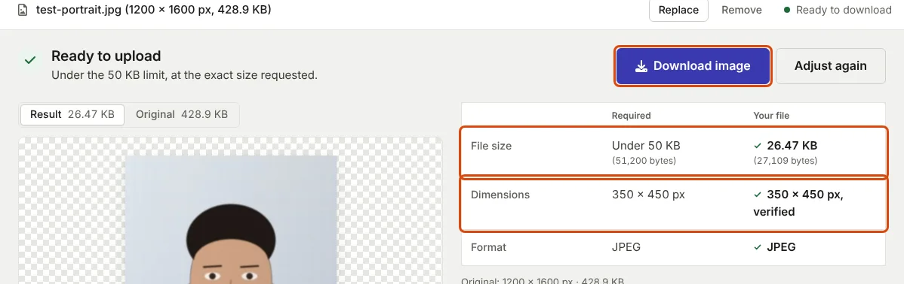

Photo Upload Errors: What Each Message Means and How to Fix It
Match the message on your screen to the check that failed, then change the file. Where an exam body publishes its rejection reasons, they are quoted below.
Read the message, then change the file
Upload checks on exam and job portals look at a few things: the file type, the size in KB, sometimes the pixel size and the file name, and later, a person or a matching step looks at the picture itself. The message you see tells you which check failed. This page groups the common messages by that check, gives the usual cause and the fix, and quotes the official rules where an exam body has published them.
Two habits prevent most repeat failures. Start from the original camera photo or scan, not a copy that has already been shrunk, screenshotted or forwarded through a chat app. And when the same message appears twice, change the file instead of retrying it: IBPS, for example, states that "until photographs and signature are as per the specifications provided, the system will not allow the candidate to move forward" (CRP PO/MT-XVI notification, Annexure III).

Size errors
"File size exceeds the maximum limit"
Cause: the file has more bytes than the field allows. Fix: resize to the pixel size the form asks for first, then compress. Shrinking the pixels costs far less quality than squeezing a large image: in our measurements a 350 × 450 px test portrait fitted under 20 KB at quality 0.92, while the same photo at 1000 × 1333 px needed quality 0.40 (20 KB page). If the tool shows a size just under the limit and the portal still refuses it, set the maximum 1 KB lower; portals do not say whether they count a kilobyte as 1,000 or 1,024 bytes.
"File size is below the minimum"
Cause: many limits are ranges. IBPS signatures must be 10 to 20 KB and photos 20 to 50 KB; UPSC photos 20 to 200 KB. A small, clean image can come out under the minimum: our 140 × 60 px test signature was 3.1 KB. Fix: keep the stated pixel size and enter the minimum in the resizer's Minimum (KB) field. The tool pads the JPEG with comment data until it reaches the minimum, without changing the picture. Do not enlarge the image to gain bytes when the form fixes its pixel size.
Format and file errors
"Invalid file format" or "Only JPG/JPEG allowed"
Cause: the file is PNG, WebP or HEIC, or it was renamed rather than converted. Changing photo.png to photo.jpg changes only the name: a JPEG file starts with the bytes FF D8 FF and a PNG file with 89 50 4E 47, and a checker that reads the first bytes sees the difference. Fix: export a real JPEG. In the resizer, set the format to JPEG; JPEG is also the format that shrinks when quality is lowered, while PNG is lossless (MDN image format guide).
"Unable to read file" or "File is corrupt"
Cause: an interrupted download, a file renamed from another format, or an unusual colour profile. Fix: open the original in the resizer and download a fresh JPEG; the browser re-encodes it from the pixels.
"File name is not valid"
Cause: some portals check the name. UPSC's portal accepts the photo only as photo and the signature only as signature (UPSC photo and signature instructions); others reject spaces or symbols. Fix: rename the downloaded file exactly as the instructions say, using letters, numbers and underscores only.
The photo appears sideways after upload
Cause: phones often store the picture unrotated and add an orientation tag; a server that ignores the tag shows it sideways. Fix: re-save the photo through the resizer. The browser applies the orientation when it draws the image, so the downloaded file is stored upright and needs no tag.
Size of the face or signature
"Image dimensions are not as per specification"
Cause: the width or height is outside the stated range. UPSC, for example, requires the triple signature to be between 350 and 500 pixels in both height and width. Fix: enter the exact size in the resizer. If the form gives centimetres, switch the unit to cm and enter the DPI it states; pixels, cm, DPI and KB explains the conversion.
The face is too small, or the signature is a "miniature"
Cause: too much background around the subject. The rules are explicit: UPSC wants the face to "cover at least 75% of the area in the photo", NEET (UG) 2026 says "80% area of the image should be candidate's face" (Information Bulletin, p. 16), and SSC names "'miniature' signatures" as the major reason for rejecting signatures, advising a signature that "occupies at least 80% of the box" (SSC advisory, 15 August 2024). Fix: crop tighter before resizing. The crop frame keeps the output shape, so you only choose how much of the photo goes inside it.
"Photo is stretched"
Cause: the width and height were changed separately in another program. Fix: crop to the target shape first and let the tool resize; it never stretches the image to fit.
Rejected after upload: what reviewers look for
Some problems pass the upload check and are caught at scrutiny. Exam bodies list the faults they reject:
- SSC: "Photo without plain background", "Candidates wearing caps", "Candidates taking photos without shirts", "Photo not sufficiently bright", "Photo is blurred" (SSC advisory, p. 3). SSC also rejects a live photo taken of an existing photograph (CGL 2026 notice, para 9.5).
- UPSC: "Photograph with dark background or in uniform, or with eyes hidden under coloured or dark glasses will not be accepted"; the portal also refuses black and white photos.
- IBPS: "In case the face in the photograph/ signature/ ... is unclear / smudged the candidate's application may be rejected", and signatures "in CAPITAL LETTERS shall NOT be accepted."
- NEET (UG) 2026: "Polaroid and Computer-generated photos are not acceptable", and the photo must be taken after 1 January 2026.
Blur and dark photos are fixed at the camera, not in software: retake the photo by a window with the back camera, as described in taking a passport photo at home. A grey or yellow signature background is fixed with the signature cleaner before resizing. Photos forwarded through chat apps are usually recompressed on the way, so transfer the original file instead.
When the upload itself fails
If the progress indicator spins or the page reloads without a message, the file is often not the cause. Check that you are still logged in, try another browser, allow the portal's pop-ups, and rename the file to plain letters and numbers. A smaller file also finishes sooner on a weak connection. If one document is a PDF that is too large, see compressing a PDF for upload portals.
Why does a file pass on one portal and fail on another?
Each portal applies its own exam's rules. A 60 KB photo is valid for UPSC (20–200 KB) and NEET (UG) (10–200 KB) but too large for IBPS (20–50 KB). Check the exam page for the form you are filling: SSC, UPSC, IBPS or NEET.
Sources
- SSC: Advisory to candidates with respect to photo and signatures, 15 August 2024
- SSC: Combined Graduate Level Examination 2026 notice, 21 May 2026, paras 9.4–9.6
- UPSC: Instructions for Uploading the Photo & Signature, upsconline.nic.in, February 2026
- IBPS: CRP PO/MT-XVI notification, 1 July 2026, Annexure III
- NTA: Information Bulletin NEET (UG)-2026, p. 16–17
- MDN Web Docs: Image file type and format guide
Measurements on this page come from running ApplyReady's own tools on the synthetic test images described in the editorial policy. Found a mistake? Report an error.